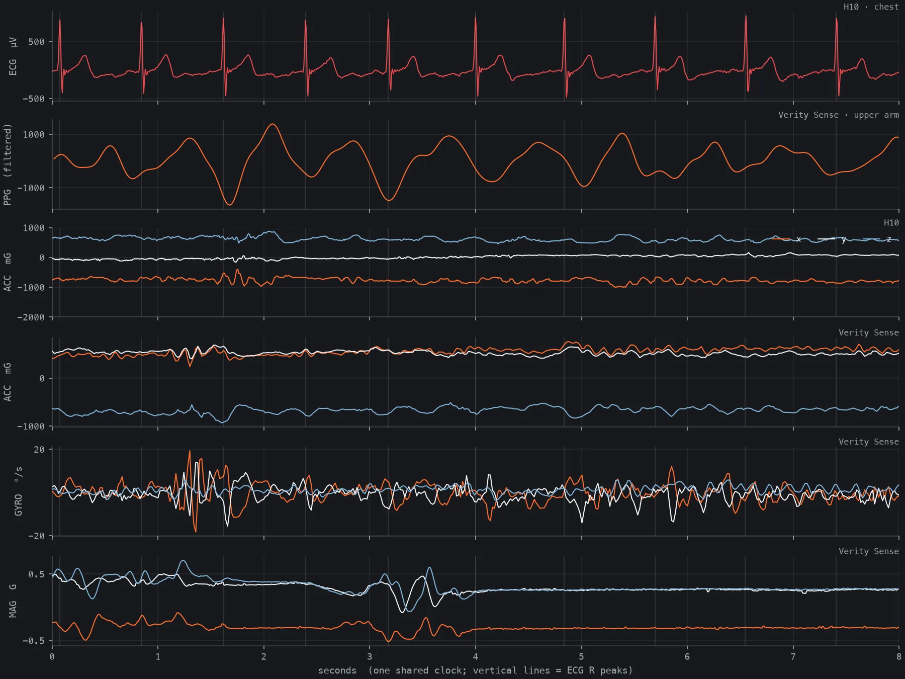
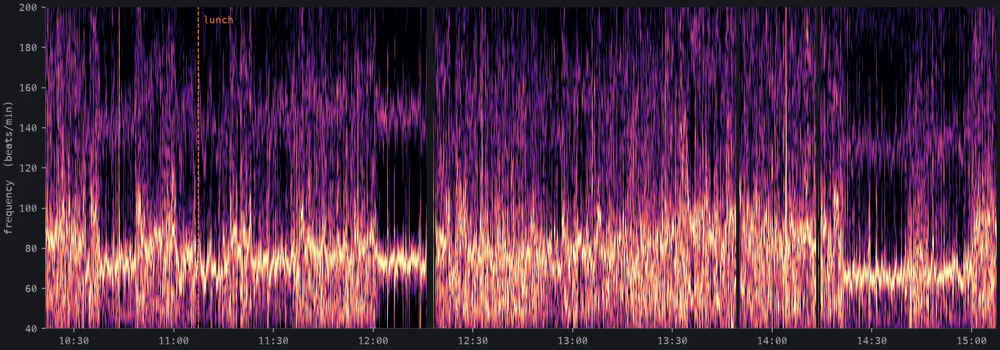
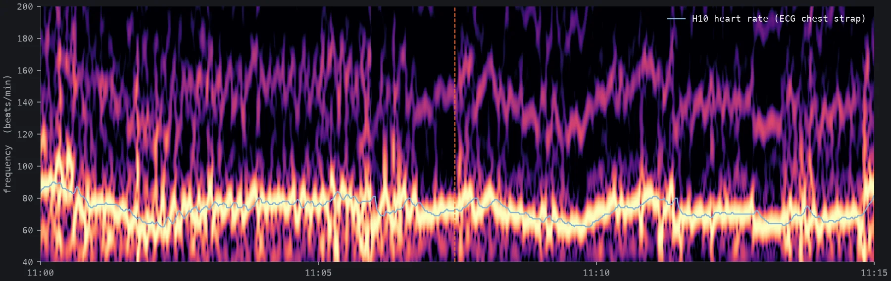
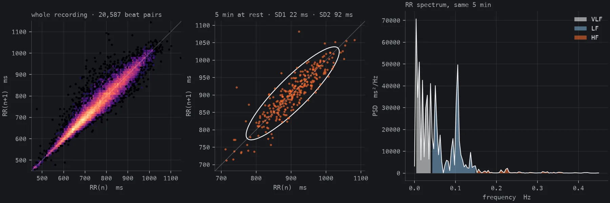

SENSORFORGE
Research logger for Polar sensors
Record raw ECG, PPG, accelerometer, heart rate and RR data from Polar sensors on iPhone, as plain CSV files you own.
Privacy policy · Support · Example notebooks
What the data looks like
A real recording: a Polar H10 on the chest and a Polar Verity Sense on the upper arm, worn for 4.8 hours on an ordinary day out, lunch included. Every figure below was plotted straight from the raw CSV files with pandas, SciPy and Matplotlib. The notebooks and a 30-minute excerpt of this log are on GitHub.


session.json.

Example notebooks
Free, MIT-licensed Jupyter notebooks with real example data. They run on your own computer, in VS Code or in Google Colab, need only pandas, NumPy, SciPy and Matplotlib, and send your data nowhere.
- 01 · Getting started: load a log, check sample rates, gaps and clock alignment, HRV per marker segment, ECG R-peaks, a tidy 1-second export
- 02 · All signals on one clock: every stream on one zoomable time axis, and the pulse arrival time from an ECG-triggered PPG average
- 03 · PPG time–frequency analysis: a spectrogram that refines as you zoom, heart rate from PPG vs. ECG
- 04 · Heart-rate variability: RR cleaning, time, frequency and Poincaré metrics, RR (ECG) vs. PPI (optical)